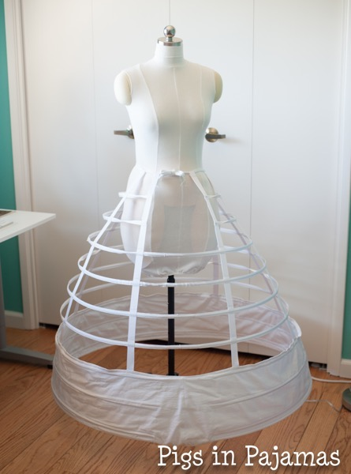
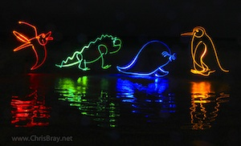

Week 1: Final Project Proposal
Here are at most 3 ideas for my final project. They are in order of my interest level.
Idea 1 : Kinetic Machine Dress
The main idea is to take a bunch of small kinematic machines of birds and afix them to the bottom of a dress (probably with the support of a hoopskirt). The kinematic machines would likely be cut in half, sincethe other wing of the bird cannot flap freely when attached to the dress. The machines would be linked up to a motor(s) which are then linked to a simple microcontroller. When power is turned on the small machines would flap along the edge of the dress. Different flapping patterns for different sections of the dress could be achieved by programming different commands into the microcontroller. An even more ambitious addition would be linking up something like a model train track to the bottom of the dress so that the kinematic machines can move around the bottom. This is the idea I'm most excited about.


Idea 2: No More "Yarn Chicken"
"Yarn Chicken" is a term used in knitting communities to describe the situation where you are almost running out of yarn at the end of a project, but not quite sure if you'll actually run out. The idea is to create some sort of device to help keep track of yarn usage throughout a project so that you have a better sense of how much yarn you'll actually need to finish. Most likely, I'd do this by creating some sort of enclosure to hold a yarn ball, and have a scale under the enclosure. Every row (or whenever the crafter wants), they can hit a button to log the current weight of the yarn ball, and the microcontroller can calculate how much yarn has been used so far. A connected website or app could visualize the data and give estimates on how much yarn is left and whether or not the project can be finished with the current yarn.
Idea 3: Custom Light Painting
Light painting is a photography technique where photos are taken while moving a light source in a dark space while taking a long exposure photograph. The idea is to create a machine that can move a light source in a precise manner to recreate a desired inputted design. This would likely use the same fundamentals as the drawing machine we build in class, but wield a light source instead of a pen. The machine could be enclosed in a dark box with a camera to take the long exposure photograph.